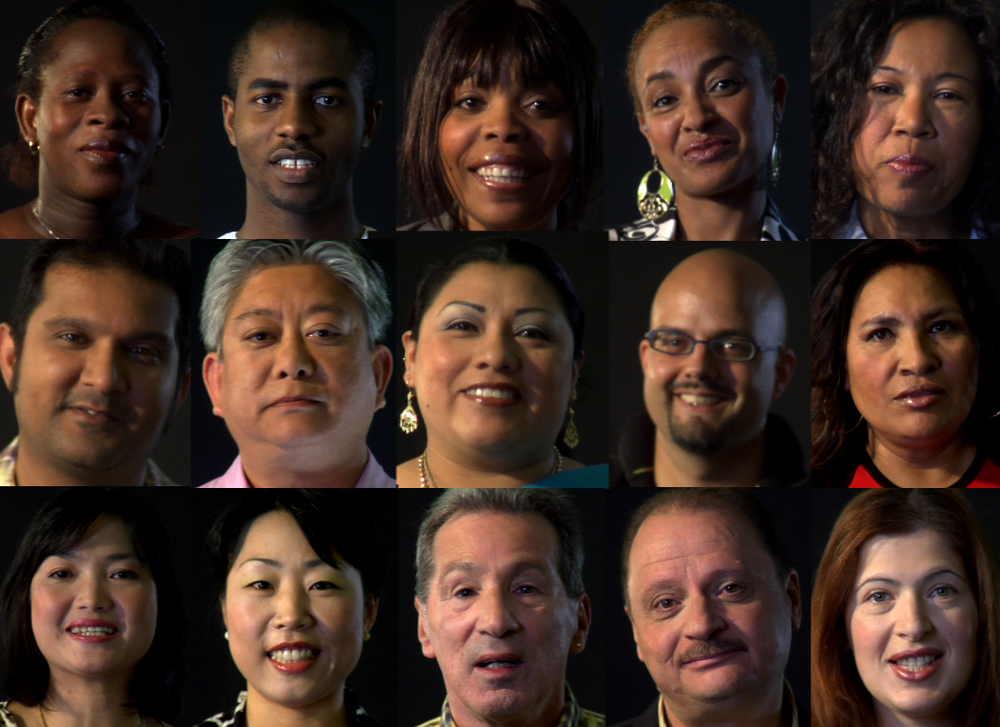
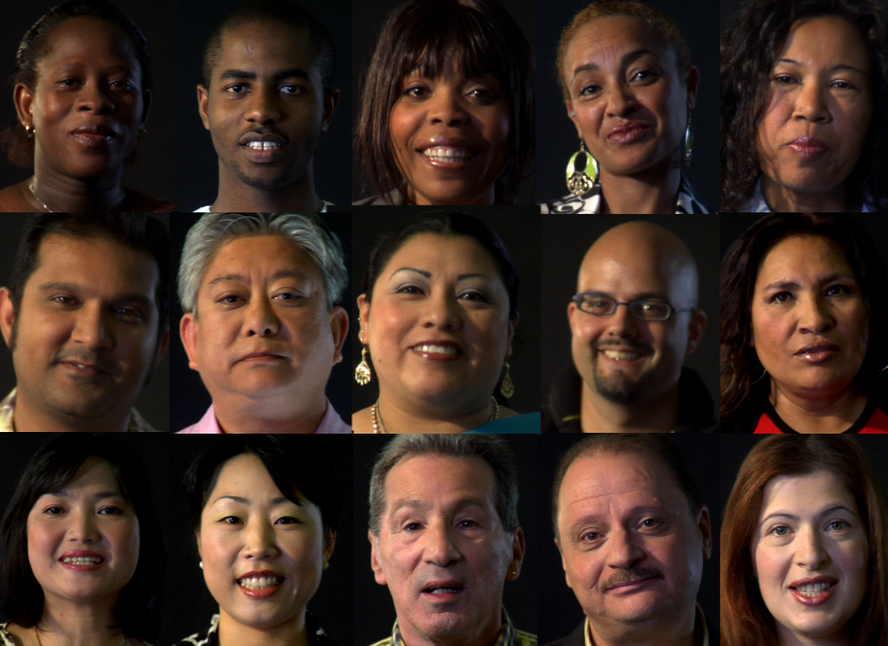
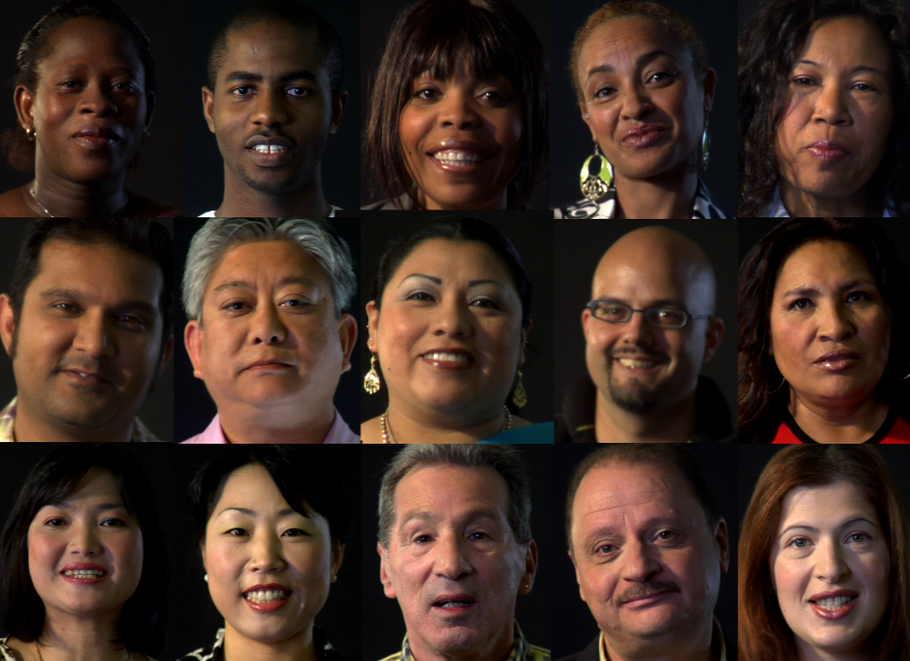
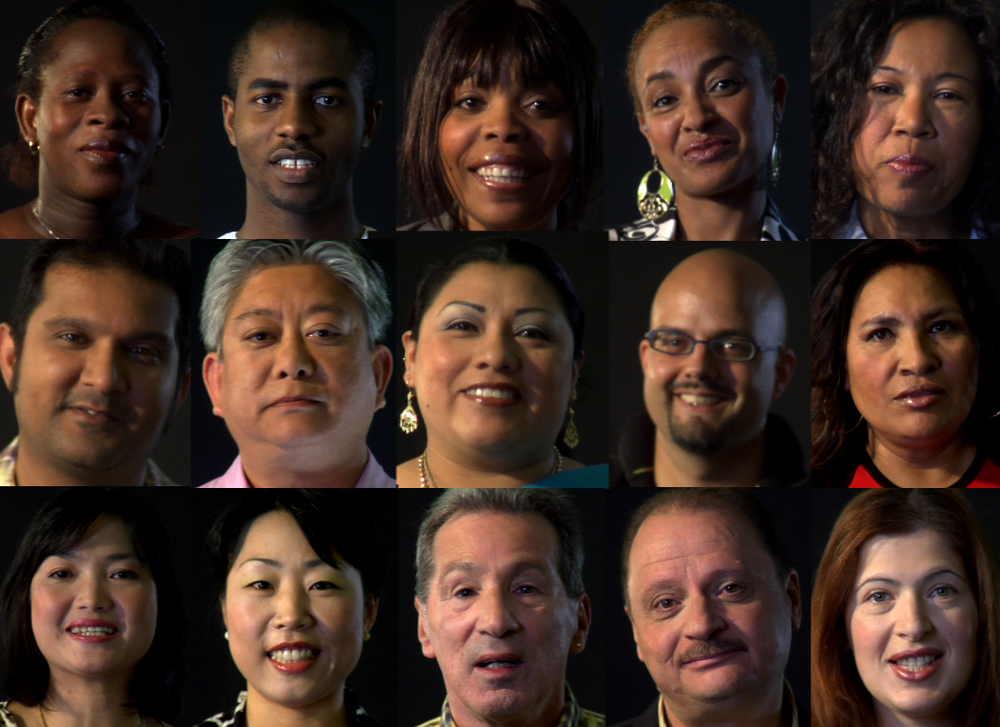

I chose to talk about this chapter 1 because I felt that this chapter foucsed on racism the most because there was a lot of instances. The first one I remember was there was a test being taken in school and the person telling the story was taking a test but then suddenly one of the white students asked the girl if she could move her body, so she could cheat off her. The girl knew what she was doing because it was stated in the story shed doesn't talk to anyone unless the talk to her first. The reason why I found this part of story showing racism the most to me is because the teacher is supposed to be watching all the students but never even noticed what was going on with the black student and that she was being cheated off. The reason I chose this chapter because I felt that throughout this chapter it's unfair to be judged based off the color of your skin and race because in the end everyone is the same and no one should be treated differently.